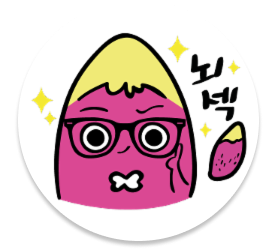
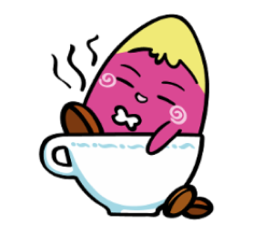

만
약
에
?
만약이란?
가정을 해서 일어나지 않는 일을 상상하거나 생각하게 만드는 경우야!
마법사가 있다면?

드래곤이 실존한다면?
좀비가 나타난다면?
저는 무슨 상상을 해봤을까요?
어느날 갑자기 지구가 반대로 자전한다면?
멸망!
- 그 이유는?
- 지구는 초당 460미터로 정말 빠르게 회전을 하는데 이 속도는 무려 한라산 정상에 4초만에 도착할 수 있는 속도입니다.
- 그런데 갑자기 지구가 반대 방향으로 자전한다면 거꾸로 바뀌는 에너지에 의해 엄청난 바람과 파도가 발생하게 됩니다.
- 이로인해 지상에 있는 거의 모든 것들을 쓸어버릴겁니다.
그런데 이렇게 끝나면 재미가 없잖아요ㅎㅎ
어느날 갑자기 ➜ 애초에 반대로
우리가 느낄 수 있는 변화들
-
1
우리는 태양과 달이 서쪽에서 뜨고 동쪽으로 지는 것을 볼 수 있습니다. -
2
편서풍에 의해 대륙성 기후를 받고 있던 한국은 편동풍에 의해 가장 크고 광활한 태평양의 영향/해양성 기후로 바뀌게 됩니다.
그로인해 연교차와 일교차가 줄어들게 되면서 우리가 알고 있는 뚜렷한 사계절은 더 이상 볼 수 없을 것입니다. -
3
무엇보다 좋은건 중국의 미세먼지에 영향을 받지 않게 됩니다.